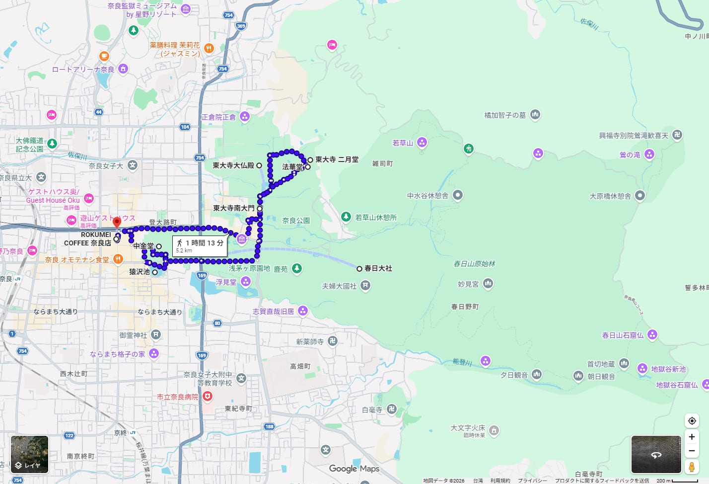
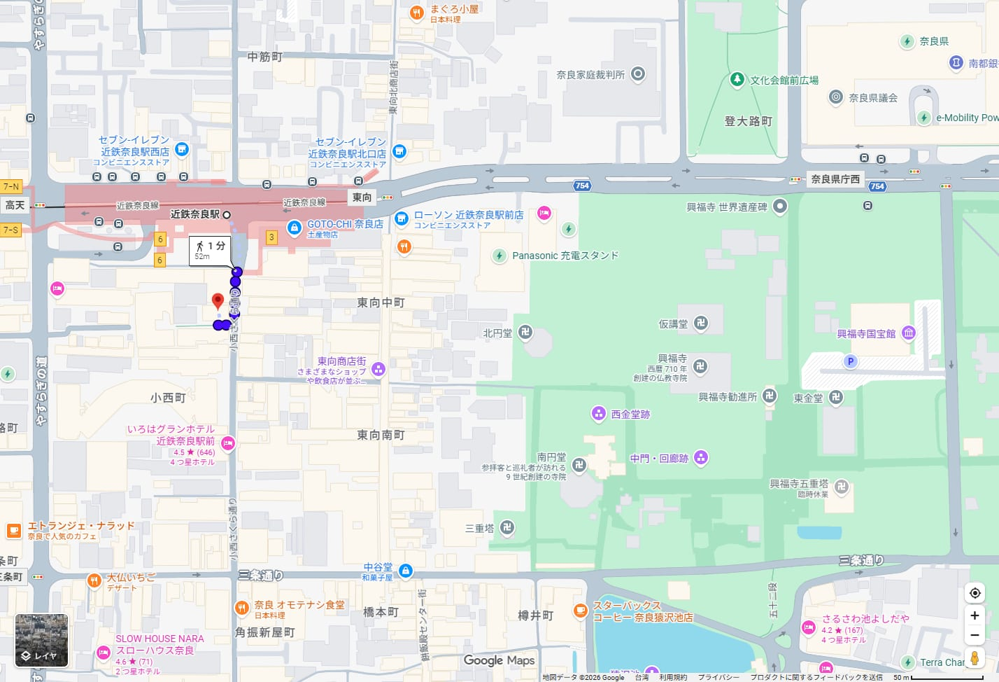
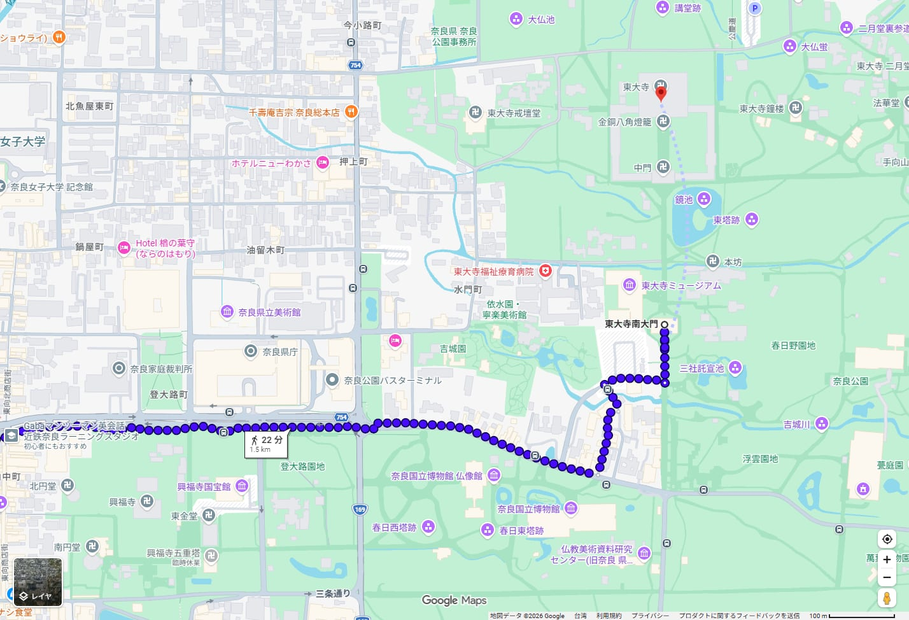
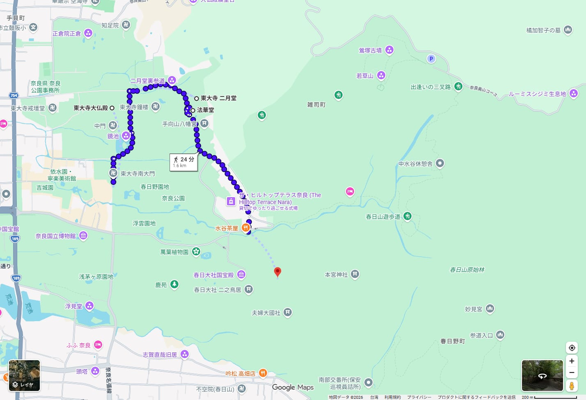
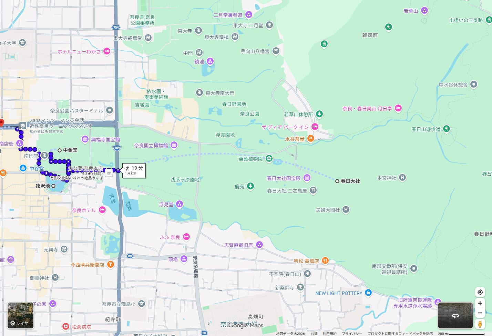
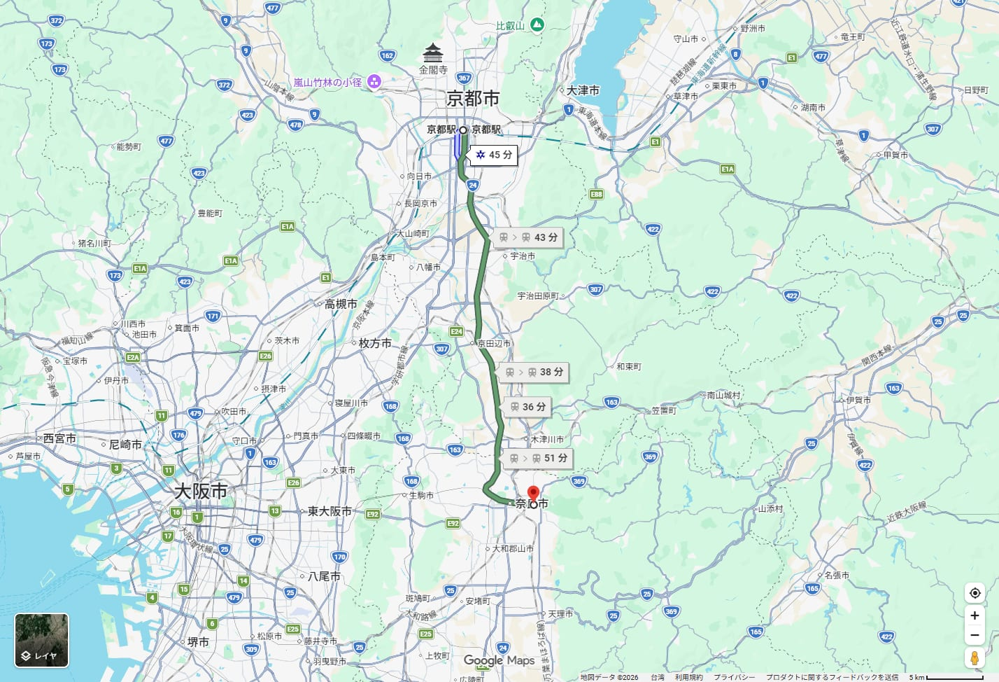
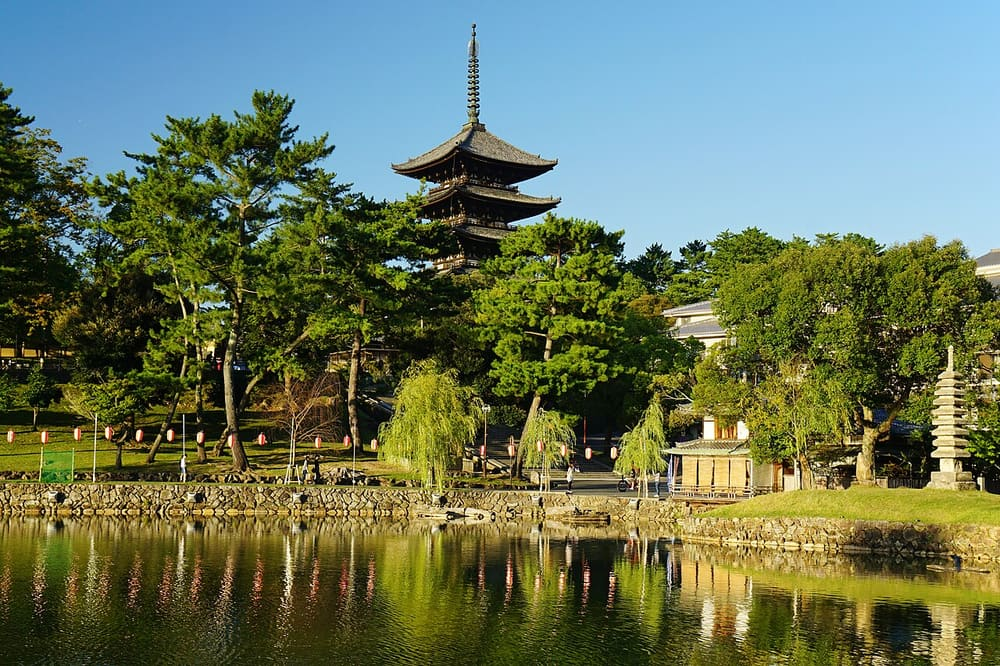

奈良一日手冊 東大寺・春日大社・奈良公園2027/04/08（四）1 / 25
2027.04.08木曜日
奈良一日
東大寺・春日大社・奈良公園
觀光＋御朱印 行程說明書
 Cun Cun・CC BY-SA 4.0・Wikimedia Commons
Cun Cun・CC BY-SA 4.0・Wikimedia Commons
2 人，京都站出發並返回。近鉄奈良站前吃早餐，從奈良公園走進東大寺，經二月堂、法華堂上春日大社，下山後走興福寺與東向商店街，傍晚搭近鉄回京都。
查證等級：✅ 官方原文 📷 omairi.club 訪客投稿（附日期） ⚠️ 二手資料或估算。時刻與費用以 2026/10/01 查到的資料為準，2027 年版尚未公布的部分已在內文標示。
奈良一日手冊 東大寺・春日大社・奈良公園2027/04/08（四）2 / 25
基旅行基本資訊
| 日期 | 2027/04/08（四）。平日，非日本國定假日 ⚠️（2027 年祝日表未逐項核對） |
|---|
| 人數 | 2 人 |
|---|
| 出發・結束 | 京都站（近鉄京都駅）。住宿在京都站周邊 |
|---|
| 時間 | 07:06 京都站發，約 18:27 回到京都站。19:00 前解散，保留 30 分鐘緩衝 |
|---|
| 交通 | 近鉄京都線・奈良線（去程轉乘 1 次）＋全程步行。巴士只當疲累時的備案 |
|---|
| 步行量 | Google 全日路線 5.2 km、1 小時 13 分 ⚠️，未含春日大社境內與午餐往返。實際約 6～8 km ⚠️（我的估算） |
|---|
| 預估費用 | 每人約 ¥10,270（交通、拜觀、御朱印、早午餐、鹿仙貝）。明細見第 21 頁 |
|---|
| 氣候 | 奈良 4 月平年值：平均 14.0℃、日最高 19.8℃、日最低 8.7℃、降水量 98.9 mm（1991～2020）✅ |
|---|
| 櫻花 | 奈良平年開花 3/28、滿開 4/4。2026 年為 3/24 開花、3/31 滿開 ⚠️。4/8 多半是花吹雪到葉櫻的階段（我的推測） |
|---|
| 預約 | 本日行程沒有需要事先預約或有開賣日的項目。特急券在近鉄車站當日購買 |
|---|
今日特色
- 4/8 是花祭（佛誕日）。東大寺在大佛殿前設花御堂，2026 年的公告是法要 8:00～9:00 左右、灌佛到約 15:00 ✅。興福寺也有仏生会 ✅。2027 年細節尚未公布。
- 興福寺五重塔目前被工程外罩整個包住，看不到塔身。修理預定到 2034 年度完成 ✅。這一天不把五重塔當看點。
- 一圈走完不折返。近鉄奈良站（西）→ 東大寺（東北）→ 春日大社（東南）→ 興福寺（西），回到出發點旁邊的商店街。
可信度圖例
| 標記 | 意思 | 本手冊的做法 |
|---|
| ✅ | 官方原文核實 | 實際開啟寺社、鐵道、觀光協會、氣象廳網頁確認。搜尋引擎摘要不算。 |
| 📷 | omairi.club 訪客投稿 | 附參拜日期，只用來判斷直書き／書置き、授與位置。 |
| ⚠️ | 二手資料或估算 | 轉乘網站、Google Maps 估算、旅遊網站、我的估算。 |
公休與休運檢查（2027/04/08 木）
| 地點 | 結果 | 依據 |
|---|
| 東大寺 | 開放（無休） | 官網寫除特別行事或緊急情況外無休 ✅ |
| 興福寺 | 開放（年中無休） | 官網 ✅ |
| 春日大社 | 開放 | 官網寫通年參拜時間，未載明公休 ✅ |
| 平宗 奈良店 | 開放（定休日是週一） | 官網 ✅，其他休業日以官網日曆為準 ⚠️ |
| ROKUMEI COFFEE | 營業時間 8:00～18:00 | 官網未載明定休日 ⚠️，食べログ寫全年無休 ⚠️ |
| 近鉄 | 使用平日時刻表 | 官網 2026/3/14 版 ✅，2027 年版尚未公布 |
基出發前最需要再確認的 5 件事
- 近鉄 2027 年度時刻表。本手冊用官網 2026/3/14 版。2027 年 3 月前後，到近鉄「駅の時刻表」再查 07:06 急行、07:52 快速急行、17:50 特急是否還在。
- 花祭的 2027 年內容。東大寺與興福寺的 4/8 活動時間，等官網公布後確認。這項只影響人潮與拍照，不影響行程。
- 法華堂與戒壇堂的入堂料。東大寺官網寫大佛殿、法華堂、戒壇堂、博物館「各自收入堂料」，表中只列一個 ¥800，我採用 ¥800 ✅。購票時再看一次。
- 御朱印初穂料。東大寺官網每張 ¥300 ✅。omairi 2026/07/23 有一則投稿寫「¥500、B5 和綴」📷，可能是特殊裝訂，兩者並列，我採用官網。興福寺與夫婦大國社的金額官網未載明 ⚠️。
- 店家日曆。ROKUMEI 的早餐套餐時段與休息日、平宗的休業日曆、東向商店街各店 4/8 是否營業。
先知道：興福寺五重塔被覆屋包住，我先前規劃寫過「看五重塔外觀」「猿澤池與五重塔倒影」，這兩處已撤回。
日文地名對照（貼進 Google Maps 搜尋用）
| 日文 | 讀音 | 中文 |
|---|
| 京都駅 ／ 近鉄京都駅 | きょうとえき ／ きんてつきょうとえき | 京都站，近鉄月台在站內 |
| 大和西大寺駅 | やまとさいだいじえき | 去程轉乘站 |
| 近鉄奈良駅 | きんてつならえき | 4 號出口 |
| ロクメイコーヒー 奈良店 | ろくめいこーひー ならてん | 早餐店 ROKUMEI COFFEE CO. NARA |
| 小西さくら通り | こにしさくらどおり | 近鉄奈良站 4 號出口外的商店街 |
| 奈良公園／鹿せんべい | ならこうえん／しかせんべい | 奈良公園／鹿仙貝 |
| 東大寺／南大門／大仏殿 | とうだいじ／なんだいもん／だいぶつでん | 東大寺／南大門／大佛殿 |
| 二月堂／法華堂（三月堂） | にがつどう／ほっけどう（さんがつどう） | 二月堂／法華堂 |
| 春日大社／夫婦大國社 | かすがたいしゃ／めおとだいこくしゃ | 春日大社／夫婦大國社 |
| 柿の葉ずし 平宗 奈良店 | かきのはずし ひらそう ならてん | 午餐 |
| 興福寺／中金堂／東金堂 | こうふくじ／ちゅうこんどう／とうこんどう | 興福寺 |
| 国宝館／南円堂（納経所） | こくほうかん／なんえんどう | 國寶館／南圓堂（納經所） |
| 猿沢池／東向商店街 | さるさわのいけ／ひがしむきしょうてんがい | 猿澤池／東向商店街 |
| 御朱印／直書き／書き置き | ごしゅいん／じかがき／かきおき | 朱印／現場手寫／預先寫好的紙 |
行今日行程總覽
| 時間 | 地點 | 行程 | 交通 | 停留 |
|---|
| 07:06 | 近鉄京都駅 | 搭急行（橿原神宮前行） | 近鉄 ⚠️ | 約 40 分 |
| 07:46→07:52 | 大和西大寺 | 轉乘快速急行（近鉄奈良行） | 同站轉乘 6 分 ⚠️ | 6 分 |
| 07:58 | 近鉄奈良駅 | 4 號出口進小西さくら通り | 步行 1 分 ⚠️ | 2 分 |
| 08:00～08:45 | ROKUMEI COFFEE | 早餐 | – | 45 分 |
| 08:45～09:20 | 奈良公園 | 走到南大門，沿路看鹿 | 步行 22 分＋拍照 13 分 ⚠️ | 35 分 |
| 09:30～10:15 | 東大寺 大佛殿 | 大佛、花祭、御朱印「華厳」 | 境內步行 | 45 分 |
| 10:25～10:55 | 二月堂 | 舞台眺望、御朱印「南無観」 | 步行約 8 分 ⚠️ | 30 分 |
| 11:00～11:30 | 法華堂 | 天平佛像、御朱印「不空羂索」 | 步行約 5 分 ⚠️ | 30 分 |
| 11:50～13:05 | 春日大社 | 本社參拜、夫婦大國社 | 步行約 20 分 ⚠️ | 75 分 |
| 13:40～14:25 | 平宗 奈良店 | 午餐（柿の葉ずし） | 下山步行約 35 分 ⚠️ | 45 分 |
| 14:30～15:45 | 興福寺 | 中金堂、東金堂、納経所 | 步行約 8 分 ⚠️ | 75 分 |
| 15:45～16:30 | 猿沢池 | 散步、休息 | 步行 4 分 ⚠️ | 45 分 |
| 16:30～17:35 | 東向商店街 | 伴手禮、點心 | 步行約 8 分 ⚠️ | 65 分 |
| 17:50→18:27 | 近鉄奈良→京都 | 特急回京都 | 近鉄 ✅ | 37 分 |
| 18:27～19:00 | 京都站 | 晚餐、解散 | – | 緩衝 33 分 |
今天的時間界線
| 項目 | 時段 | 備註 |
|---|
| 去程直達急行（備案） | 07:44 發→08:35 到 | 不轉乘，但晚 37 分到 ✅ |
| 去程快速急行（備案） | 07:58 準急→08:04 到、08:02 快速急行→08:08 到 | 錯過 07:52 時用 ✅ |
| ROKUMEI | 8:00 開店，L.O. 17:30 | ✅ |
| 東大寺 大佛殿・二月堂（御朱印） | 7:30～17:30（4～10 月） | ✅ |
| 法華堂・戒壇堂 | 8:30～16:00（御朱印同） | 16:00 前一定要到 ✅ |
| 春日大社 | 參拜 6:30～17:30、御朱印 9:00～閉門、特別參拝 9:00～16:00 | ✅ |
| 平宗 はなれ（用餐） | 11:30～20:00（L.O.） | 週一公休 ✅ |
| 興福寺 | 9:00～17:00，入堂至 16:45；三館共通券 16:00 停售；納経所最後受理 16:30 | ✅ |
| 回程直達（近鉄奈良→京都） | 17:17 急行→18:06、17:25 特急→18:00、17:50 特急→18:27、18:20 特急→18:57、18:47 急行→19:32 | 19:00 前到京都的最晚班是 18:20 ✅ |
行今日路線地圖

全日路線（近鉄奈良→ROKUMEI→南大門→大佛殿→二月堂→法華堂→春日大社→中金堂→猿澤池→近鉄奈良）。步行 1 小時 13 分、5.2 km （Google 估算）・Google Maps 截圖・地圖資料 ©2026 Google・截取日期 2026/10/01
行程順序示意圖（示意圖，非地理比例）
京都▶大和西大寺▶近鉄奈良▶ROKUMEI▶南大門▶大佛殿▶二月堂▶法華堂▶春日大社▶平宗▶興福寺▶猿澤池▶東向商店街▶近鉄奈良▶京都
為什麼這樣走最順
近鉄奈良站在西側，東大寺在東北，春日大社在東南。照「站 → 東大寺 → 春日大社 → 回站」走，是一圈順時針，沒有折返。上山集中在中午前，下午全是下坡與平地。興福寺、猿澤池、東向商店街都貼著車站，放在最後，累了可以直接上車。
順路加入的
- ROKUMEI：出站 1 分鐘
- 猿澤池、南大門、公園的鹿：去東大寺的路上
- 二月堂舞台：大佛殿到法華堂之間
- 平宗：下山後經猿澤池，南行約 100 m ✅
值得去但不排的
- 奈良町、元興寺、新藥師寺：都在南側，折返多
- 東大寺博物館、正倉院外觀：與大佛殿重複
- 春日大社國寶殿（¥700）：與時間不合 ✅
- 萬葉植物園、藤花：藤花要到黃金週前後 ✅
- 戒壇院：備案，約多 15 分鐘 ⚠️
有沒有更好的反向走法
反過來先上春日大社，要先搭巴士上山（約 11～15 分 ✅），御朱印 9:00 才開始；東大寺會落到中午到下午，是人潮最多的時段，法華堂 16:00 關門也更趕。所以不採用。
奈良一日手冊 東大寺・春日大社・奈良公園2027/04/08（四）6 / 25
行區段放大地圖

① 近鉄奈良站 → ROKUMEI：1 分、52 m・Google Maps 截圖・地圖資料 ©2026 Google・截取日期 2026/10/01

② 登大路・奈良公園 → 南大門：22 分、1.5 km・Google Maps 截圖・地圖資料 ©2026 Google・截取日期 2026/10/01

③ 大佛殿 → 二月堂 → 法華堂 → 春日大社：24 分、1.6 km・Google Maps 截圖・地圖資料 ©2026 Google・截取日期 2026/10/01

④ 春日大社 → 中金堂 → 猿澤池 → 近鉄奈良：19 分、1.4 km・Google Maps 截圖・地圖資料 ©2026 Google・截取日期 2026/10/01
各段步行時間（Google 估算，⚠️）
| 區段 | Google | 本手冊採用 | 說明 |
|---|
| 近鉄奈良駅 → ROKUMEI | 1 分、52 m | 2 分 | 4 號出口出站即是 |
| ROKUMEI → 南大門 | 22 分、1.5 km | 35 分 | 多留 13 分給賞鹿與拍照 |
| 大佛殿 → 二月堂 | 8 分 | 10 分 | 有石階 |
| 二月堂 → 法華堂 | 5 分 | 5 分 | – |
| 法華堂 → 春日大社 | 11 分（路線沒畫完） | 20 分 | Google 在春日大社境內沒有算出完整步道，我抓 20 分 |
| 春日大社 → 興福寺 → 猿澤池 | 19 分、1.4 km（同樣沒算完） | 約 35 分 | 官網：從車站步行約 25 分 ✅，以此反推 |
| 猿澤池 → 近鉄奈良駅 | 8 分 | 8 分 | – |
第③張地圖最後一段是虛線，是 Google 沒有畫出的路段，不是實際步道。實際走法以現場指標為準。
奈良一日手冊 東大寺・春日大社・奈良公園2027/04/08（四）7 / 25
行交通總覽
| 段 | 起訖 | 工具 | 時間 | 費用 | 轉乘 | 徒步 | 來源 |
|---|
| 1 | 京都→大和西大寺 | 近鉄京都線 急行 橿原神宮前行 07:06→07:46 | 40 分 | 京都→近鉄奈良 ¥760 | 1 | 站內 | ✅ |
| 2 | 大和西大寺→近鉄奈良 | 快速急行 近鉄奈良行 07:52→07:58 | 6 分 | 含於 ¥760 | – | 站內轉乘 | ✅ |
| 3 | 近鉄奈良→ROKUMEI | 步行 | 1 分 | – | – | 52 m | ⚠️ |
| 4 | ROKUMEI→南大門 | 步行 | 22 分 | – | – | 1.5 km | ⚠️ |
| 5 | 南大門→大佛殿 | 步行 | 約 7 分 | – | – | 約 0.5 km | ⚠️ |
| 6 | 大佛殿→二月堂→法華堂 | 步行 | 約 13 分 | – | – | 含石階 | ⚠️ |
| 7 | 法華堂→春日大社 | 步行 | 約 20 分 | – | – | 約 1 km | ⚠️ |
| 8 | 春日大社→平宗→興福寺 | 步行 | 約 45 分 | – | – | 約 2.5 km | ⚠️ |
| 9 | 近鉄奈良→京都 | 特急 17:50→18:27 | 37 分 | ¥760＋特急券 ¥520＝¥1,280 | – | 站內 | ✅ |
票價出自近鉄「京都⇔近鉄奈良 運賃特急料金表」：普通運賃 ¥760、特急料金 ¥520 ✅。時刻出自近鉄駅時刻表（2026年3月14日現在、平日）✅。2027 年版尚未公布。
去程四種方式比較
| 方式 | 京都發→奈良到 | 時間 | 費用 | 轉乘 | 徒步與便利性 |
|---|
| A 主案：急行＋西大寺轉乘 | 07:06→07:58 | 52 分 | ¥760 | 1 次 | 最貼近預定的 7:10 出發，可在 8:00 開店時到 ROKUMEI |
| B 直達急行 | 07:44→08:35 | 51 分 | ¥760 | 無 | 最輕鬆，但晚 37 分，後面各點往後推 |
| C 特急 | 07:50→08:25 | 35 分 | ¥1,280 | 無 | 快，但多 ¥520，仍比 A 晚 27 分 |
| D JR みやこ路快速 | 以當日時刻為準 | 約 45 分 ⚠️ | ¥720 ⚠️ | 無 | JR 奈良站離公園較遠：步行約 20 分、巴士約 10 分 ✅ |
選 A 的理由：ROKUMEI 8:00 開，早餐後 8:45 進公園，後面所有行程與先前確認的時間相同。轉乘只有一次，且備案就在 6 分鐘內。
回程比較
| 班次 | 到京都 | 費用 | 判斷 |
|---|
| 17:17 急行 | 18:06 | ¥760 | 要在 17:05 離開商店街，逛街只剩約 35 分 |
| 17:50 特急（主案） | 18:27 | ¥1,280 | 多 ¥520，但商店街可逛到 17:35 |
| 18:20 特急 | 18:57 | ¥1,280 | 19:00 前能到的最後一班，緩衝太薄 |
| 18:47 急行 | 19:32 | ¥760 | 超過 19:00，不採用 |
一日券判斷
全程只有近鉄往返，加一次可能的巴士（春日大社本殿→近鉄奈良 ¥250 ⚠️）。不需要買任何一日券，也不需要 JR Pass。
奈良一日手冊 東大寺・春日大社・奈良公園2027/04/08（四）8 / 25
行京都⇄奈良 近鉄專頁

京都駅→近鉄奈良駅（電車）。Google 依截圖當下的時間顯示 36～55 分，不代表 4/8 的班次・Google Maps 截圖・地圖資料 ©2026 Google・截取日期 2026/10/01
去程班次（平日）✅
| 列車 | 京都發 | 到站 | 備註 |
|---|
| 急行 橿原神宮前行 | 07:06 | 西大寺 07:46（07:49 發） | 主案，要在西大寺下車 |
| 快速急行 近鉄奈良行 | 西大寺 07:52 | 近鉄奈良 07:58 | 始發尼崎 |
| 準急 近鉄奈良行 | 西大寺 07:58 | 近鉄奈良 08:04 | 錯過 07:52 的備案 |
| 急行 近鉄奈良行 | 07:44 | 近鉄奈良 08:35 | 直達備案 |
| 特急 ビスタカー | 07:50 | 近鉄奈良 08:25 | +¥520 |
回程班次（平日）✅
| 列車 | 近鉄奈良發 | 到京都 |
|---|
| 急行 | 17:17 | 18:06 |
| 特急 ビスタカー | 17:25 | 18:00 |
| 特急（主案） | 17:50 | 18:27 |
| 特急 伊勢志摩ライナー | 18:20 | 18:57 |
| 急行 | 18:47 | 19:32 |
時刻表標示「2026年3月14日現在」。2027 年版尚未公布，3 月前後再看一次。
票價
| 普通運賃 | 京都⇄近鉄奈良 ¥760 ✅ |
|---|
| 特急料金 | ¥520（京都⇄近鉄奈良）✅。座席指定的有無未核對 ⚠️ |
|---|
| 快速急行・準急・急行 | 只收普通運賃 ¥760 |
|---|
| JR 比較 | みやこ路快速 京都→JR奈良 ¥720、約 45 分 ⚠️（駅探） |
|---|
風險與注意
- 07:06 的急行終點是橿原神宮前，不是近鉄奈良行。在大和西大寺下車轉乘，不要坐過站。
- 大和西大寺是大站，轉乘月台位置我沒有查證 ⚠️。出站前看站內「近鉄奈良方面」指標。
- 大和西大寺到近鉄奈良約 6 分鐘，不會多收費 ✅。
- 特急的車種會因整備改變 ✅（時刻表附註）。
奈良一日手冊 東大寺・春日大社・奈良公園2027/04/08（四）9 / 25
行出發段落食 到站後直接早餐
| 時間 | 步驟 | 重點 |
|---|
| 07:00 前 | 到近鉄京都駅月台 | 近鉄京都駅在京都站大樓內 ⚠️。站內搜尋「近鉄」指標 |
| 07:06 | 搭急行 橿原神宮前行 | 認「橿原神宮前」，車身側面與月台螢幕寫急行 |
| 07:46 | 大和西大寺下車 | 轉乘「奈良線 近鉄奈良方面」 |
| 07:52 | 搭快速急行 近鉄奈良行 | 錯過就搭 07:58 準急（08:04 到） |
| 07:58 | 近鉄奈良駅，走 4 號出口 | 小西さくら通り商店街入口，鹿の暖簾是店的標誌 ✅ |
| 08:00 | ROKUMEI 開店 | 出站到店 1 分鐘、52 m ⚠️ |
食ROKUMEI COFFEE CO. NARAロクメイコーヒー 奈良店
為什麼推薦：它在近鉄奈良站 4 號出口外，出站 1 分鐘，8:00 開店，剛好接在 07:58 到站之後。烘豆師拿過 JCRC 2018（日本咖啡烘焙冠軍賽）冠軍 ✅，咖啡與現烤可頌是早上進公園前的補給。這是順路的一站，不是繞路的一站。
近鉄奈良駅 → ROKUMEI（1 分、52 m）・Google Maps 截圖・地圖資料 ©2026 Google・截取日期 2026/10/01
| 地址 | 〒630-8225 奈良市西御門町31 ✅ |
|---|
| 電話 | 0742-23-4075 ✅ |
|---|
| 營業 | 8:00～18:00（L.O. 17:30）✅ |
|---|
| 公休 | 官網未載明 ⚠️，食べログ：全年無休 ⚠️ |
|---|
| 座位 | 吧台與 4 人桌 ✅；食べログ寫 42 席、不能預約 ⚠️ |
|---|
| 付款 | 信用卡、電子錢包、QR 支付 ⚠️（食べログ） |
|---|
| 飲料 | 本日のコーヒー ¥580、ブレンド ¥650～、カフェラテ ¥680、カプチーノ ¥680 ✅ |
|---|
| 食物 | 自家製可頌、法式可頌、季節可頌；價格官網未列 ✅ |
|---|
| 早餐套餐 | 時段與價格說法不一：一份資料寫 9:00～11:00、¥880，食べログ列 ¥820，官網只寫有モーニングセット。採用「到店確認」 |
|---|
8:00～9:00 若尚未供應套餐，改點單品可頌＋本日のコーヒー（約 ¥880 ⚠️）。可外帶，趕時間時拿著邊走邊吃 ✅。照片：Commons 上找不到可確認的店內照片，這頁用地圖代替。
Google Maps 開啟 ROKUMEI | 步行導航
奈良一日手冊 東大寺・春日大社・奈良公園2027/04/08（四）10 / 25
観奈良公園與鹿ならこうえん
為什麼推薦：這趟的第一個畫面。從 ROKUMEI 走到南大門的 22 分鐘幾乎都在公園裡，鹿會自己走到路上。這一段不需要門票，也不用排隊，是整天唯一不趕的時間。
基本資訊
| 規模 | 總面積 511.52 公頃，約東京巨蛋 108 個大 ✅。公園沒有出入口的概念，任何方向都能進出 ✅ |
|---|
| 鹿 | 約 1,300 頭，野生動物，國家天然紀念物 ✅ |
|---|
| 位置 | 近鉄奈良駅徒步約 8 分、JR奈良駅徒步約 20 分（巴士約 10 分）✅ |
|---|
| 鹿仙貝 | 10 片 ¥200，露店與伴手禮店販售 ✅ |
|---|
| 本段走法 | ROKUMEI → 登大路 → 公園 → 南大門，22 分、1.5 km ⚠️ |
|---|
現場看什麼
- 鹿在櫻花花瓣上吃草的畫面（時間上多半是花吹雪階段 ⚠️）
- 路上的興福寺區域。五重塔現在是工程外罩，Google 地圖也標「臨時休業」。2023 年 7 月起開始搭覆屋，預定 2034 年度完成 ✅
- 東大寺南大門前的鹿群，與大門同框很好拍
- 早上出沒的鹿較悠閒，人多時鹿會往邊緣移動
與鹿相處的規則✅
- 只能餵鹿仙貝，點心、麵包、蔬菜都不能給。手上的塑膠袋、地圖、傳單會被吃掉。
- 買到後先拆掉紙封，一片一片快速給。沒有了就雙手張開，表示「沒有了」。
- 野生動物，盡量不要摸。接觸後洗手。
來源：奈良市観光協會「奈良公園の見どころ」「奈良公園の鹿」✅、気象庁平年値 ✅。拍照建議：低角度、鹿與花同框；不要在鹿旁蹲著拿食物。
Google Maps 步行導航（ROKUMEI → 南大門）
奈良一日手冊 東大寺・春日大社・奈良公園2027/04/08（四）11 / 25
観東大寺とうだいじ 簡介與基本資訊
為什麼推薦：觀光價值 S、御朱印價值 A。它是今天的主角，也是所有行程裡最大的景區。我們只走最精華的一段：南大門、大佛殿、二月堂、法華堂，大約 2 小時 10 分。其餘堂宇不排，原因在下一頁。
簡介
華厳宗大本山。大佛殿是東大寺的金堂，奈良時代創建，歷經治承與永祿兩次兵火，現在的建築是江戶時代由公慶上人重建，規模縮小為 7 間，但高度與進深維持創建時的樣子，是世界最大級的木造建築 ✅。大佛殿東西 57.012 m、南北 50.480 m、高 48.742 m ✅。
景區總覽
| 區域 | 內容 | 時間 | 另收費 | 本行程 |
|---|
| 南大門 | 入口大門，門前有鹿 | 開放時間官網未載明 ⚠️ | 免費 ⚠️ | 路過，拍照 |
| 大佛殿 | 盧舍那佛 14.98 m | 7:30～17:30 ✅ | ¥800 ✅ | 必看 |
| 二月堂 | 舞台眺望 | 御朱印 7:30～17:30 ✅ | 舞台未載明 ⚠️ | 看 |
| 法華堂（三月堂） | 天平佛像群 | 8:30～16:00 ✅ | ¥800 ✅ | 看 |
| 戒壇院戒壇堂 | 四天王像 | 8:30～16:00 ✅ | ¥800 ✅ | 備案 |
| 東大寺博物館 | 展示 | 9:30～17:30 ✅ | 單獨 ¥800，與大佛殿套票 ¥1,200 ✅ | 不排 |
| 四月堂（三昧堂） | 耐震工事閉堂 | 令和7年5月7日起約 2 年，令和9年春頃再開予定 ✅ | – | 不排，4/8 可能剛好重開 ⚠️ |
| 其他小堂 | 開山堂、不動堂、俊乗堂、念仏堂、行基堂、鐘楼等 | 8:30～16:00 左右 ✅ | 各堂另計 | 不排 |
基本資訊
| 地址 | 〒630-8587 奈良市雑司町406-1 ✅ 電話 0742-22-5511 ✅ |
|---|
| 休館 | 無休（除特別行事或緊急情況）✅ |
|---|
| 付款 | 現金のみ ✅ |
|---|
| 音聲導覽 | ¥500，4～10 月 10:00～17:00 借出，大佛殿剪票口外 15 m ✅ |
|---|
| 從車站 | 近鉄奈良駅→南大門約 1.5 km 步行 ⚠️；巴士「東大寺大仏殿・春日大社前」下車步行 5 分 ✅ |
|---|
| 花祭（仏生会） | 2026/4/8：法要 8:00～9:00 左右、甘茶 8:00 過後～15:00 左右，在大佛殿前 ✅。2027 年待公布 ⚠️ |
|---|
官方境內案內圖：東大寺 拝観時間・拝観料頁（附境內案內圖 PDF）
奈良一日手冊 東大寺・春日大社・奈良公園2027/04/08（四）12 / 25
観東大寺參觀路線與時間不夠時
完整參觀還是只看精華
東大寺御朱印有 10 幾種，分散在各堂。第三方文章估計全收要 5～6 小時、走 7～8 公里 ⚠️。這趟一天還要去春日大社與興福寺，所以只走精華。判斷：只看精華。
建議路線與時間
| 順序 | 地點 | 時間 | 做什麼 |
|---|
| 1 | 南大門 | 09:20 | 看大門與鹿，拍照 5 分鐘 |
| 2 | 大佛殿 | 09:30～10:15 | 先領御朱印排隊（7:30 起受理），再入殿，最後看八角燈籠 |
| 3 | 二月堂 | 10:25～10:55 | 從大佛殿東北方向走上去，約 8 分 ⚠️。爬舞台眺望，領御朱印 |
| 4 | 法華堂 | 11:00～11:30 | 緊鄰二月堂，約 5 分 ⚠️。入堂看佛像，領御朱印 |
| 5 | 前往春日大社 | 11:30～11:50 | 東南方向林間路徑 |
只剩 60 分鐘怎麼走
- 南大門 5 分鐘 → 大佛殿 40 分鐘（含御朱印）→ 二月堂 15 分鐘（只領御朱印、看舞台）。
- 法華堂 16:00 關，若時間夠，改把二月堂縮短、保留法華堂（佛像比舞台更值得）。
- 時間窗口：戒壇堂與法華堂同樣 16:00 關，下午才到東大寺要先排它們。
時間充裕怎麼加
- 第一優先：戒壇院戒壇堂（四天王像，¥800，8:30～16:00，約 +15 分）✅
- 第二：東大寺博物館（9:30～17:30，最後入館 17:00，與大佛殿套票 ¥1,200）✅
- 再來：在大佛殿前多看花祭的灌佛（約到 15:00）✅（2026 年資料）
人潮與排隊
- 大佛殿御朱印有多位書寫者，可以自選隊伍；2026/09/02 的投稿提到這點 📷。
- 2026/05/02 的投稿：大佛殿非常擁擠，法華堂內人很少，可以慢慢看佛像 📷。
- 所以順序是先大佛殿（人潮還沒到最高）、再山側的二月堂與法華堂。
來源：東大寺官網「拝観時間・拝観料」「御朱印について」✅、omairi 東大寺（2026/05/02、2026/09/02）📷、第三方御朱印整理 ⚠️。
奈良一日手冊 東大寺・春日大社・奈良公園2027/04/08（四）13 / 25
観南大門・大佛殿なんだいもん・だいぶつでん
為什麼推薦：觀光價值 S、御朱印價值 A。整趟旅行的中心點，也是 4/8 花祭的現場。我們 9:20 到南大門、9:30 進大佛殿，是為了趕在白天人潮最高之前。南大門當作入口，不單獨花時間。
現場看什麼
- 盧舍那佛：像高 14.98 m，目長 1.02 m，耳長 2.54 m，顏長 5.33 m ✅
- 大佛殿外觀：世界最大級的木造建築，高 48.742 m ✅
- 八角燈籠：國寶，奈良時代，東大寺創建當初之物，火袋四面有音聲菩薩浮雕 ✅
- 台座蓮瓣：毛彫的「蓮華藏世界」圖，描繪華嚴經的世界 ✅
- 花祭（4/8）：大佛殿前花御堂，誕生佛可以灌甘茶 ✅（2026 年資料）
基本資訊
| 時間 | 7:30～17:30（4～10 月）✅。最後入場時間官網未載明 ⚠️ |
|---|
| 門票 | ¥800（中學生以上）；小學生 ¥400。僅現金 ✅ |
|---|
| 地址 | 〒630-8587 奈良市雑司町406-1 ✅ |
|---|
| 上一點 | ROKUMEI 起 22 分步行到南大門，再約 7 分到大佛殿 ⚠️ |
|---|
| 拍照 | 參拜路線上可自由拍攝；禁止三腳架與團體集合照；堂內不可寫生與使用手電筒 ✅ |
|---|
印御朱印
| 種類 | 「華厳」，¥300（官網）✅ |
|---|
| 授與位置 | 大佛殿內 📷（2026/07/16、直書き）；另有投稿稱大佛殿授与所 📷 |
|---|
| 時間 | 7:30～17:30（4～10 月）✅ |
|---|
| 方式 | 直書き。2026/09/02、09/13、07/16 皆為直書き 📷，且有多位書寫者可選隊伍 📷 |
|---|
| 價格差異 | 官網 ¥300 ✅。2026/07/23 的投稿寫 ¥500、B5 和綴 📷。採用官網，現場確認 |
|---|
| 御朱印帳 | 東大寺自家版 ¥1,500～2,500（花柄大 ¥2,000、小 ¥1,500；椿 ¥2,500）✅ |
|---|
| 推薦程度 | 收集 ★★★★★ 參觀 ★★★★★ |
|---|
拍照建議：南大門正面看大佛殿的大屋頂；殿外中軸線上看八角燈籠與大屋頂同框；進殿前先拍外觀，殿內光線暗。 Google Maps：南大門→大佛殿 | 大佛殿位置
奈良一日手冊 東大寺・春日大社・奈良公園2027/04/08（四）14 / 25
観二月堂にがつどう
為什麼推薦：觀光價值 A、御朱印價值 A。大佛殿看完後往山側走，這裡是整天第一個可以從高處往下看奈良的地方。人潮比大佛殿少，石階與木造舞台有登山的感覺。和法華堂只隔 5 分鐘，兩處連著走不繞路。
簡介
位於東大寺山側的佛堂，以每年 3 月的修二會（お水取り）聞名 ⚠️。官網的御朱印頁提到修二會期間御朱印照常授與 ✅。4/8 已經不在修二會期間。
現場看什麼
- 舞台往西眺望，視野開闊。2026/06/29 的投稿說「歩き疲れたならしばし休憩できます。見晴らしよい」📷
- 同一則投稿提到從這裡經裏參道的路是東大寺的亮點 📷，本行程不走，改往法華堂
- 上石階的木造堂宇與石燈籠，從下方仰拍最好看
- 舞台上可坐下喘口氣，備案時間就放在這裡
基本資訊
| 地址 | 〒630-8587 奈良市雑司町406-1（東大寺境內）✅ |
|---|
| 開放 | 舞台是否全天可上，官網未載明 ⚠️；御朱印受付 7:30～17:30 ✅ |
|---|
| 門票 | 未載明 ⚠️（官網的各堂收費表只列大佛殿、法華堂、戒壇堂、博物館） |
|---|
| 上一點 | 大佛殿→二月堂 Google 估算 8 分 ⚠️，有坡度與石階 |
|---|
| 停留 | 30 分：御朱印 10 分、舞台 10 分、石階上下 10 分 |
|---|
印御朱印
| 種類 | 「南無観」「二月堂御詠歌」，各 ¥300 ✅。本行程領「南無観」，御詠歌選用 |
|---|
| 授與位置 | 二月堂前授与所 📷（2026/07/23） |
|---|
| 時間 | 4～10 月 7:30～17:30。修二會期間照常授與 ✅ |
|---|
| 方式 | 直書き：2026/09/13、2026/09/02、2025/12/09 📷 |
|---|
| 備註 | 2026/09/02 的投稿拿到「南無観」的說明文，解釋觀指觀音菩薩 📷 |
|---|
| 推薦程度 | 收集 ★★★★☆ 參觀 ★★★★☆ |
|---|
拍照建議：石階下方往上拍，把石燈籠放前景；舞台上拍遠景時避開逆光。 Google Maps：大佛殿→二月堂
奈良一日手冊 東大寺・春日大社・奈良公園2027/04/08（四）15 / 25
観法華堂（三月堂）ほっけどう（さんがつどう）
為什麼推薦：觀光價值 A（佛像價值更高）、御朱印價值 A。大佛殿很擠，法華堂內人少，可以慢慢看國寶佛像。2026/05/02 的投稿就說「大混雜の大仏殿から一転、堂内は人もまばら」📷。它 16:00 關門，所以放在上午。
簡介
本尊是不空羂索觀音，周圍有許多天平時代的佛像 📷（投稿提到金剛力士像與不空羂索觀音）。「執金剛神」的御朱印只在 12 月 16 日提供，4/8 不會有 ✅。「東大寺最古的建築」的說法來自一般解說 ⚠️。
現場看什麼
- 不空羂索觀音菩薩：國寶，堂內的中心佛像 📷
- 四周的守護像：「圍繞的護衛」般的氣勢，2026/06/29 的投稿用「ものすごい迫力」形容 📷
- 堂內光線暗，用眼睛看比用相機好。內部能否拍照官網未載明 ⚠️
- 建築本身的木造格子與緩坡屋頂，適合在外面拍
基本資訊
| 時間 | 8:30～16:00（御朱印受付同）✅ |
|---|
| 門票 | ¥800（東大寺官網：法華堂另收入堂料）✅。是否同為 ¥800 現場確認 ⚠️ |
|---|
| 地址 | 東大寺境內 ✅ |
|---|
| 上一點 | 二月堂→法華堂約 5 分 ⚠️ |
|---|
| 停留 | 30 分：佛像 20 分、御朱印 10 分 |
|---|
印御朱印
| 種類 | 「不空羂索」¥300 ✅；「執金剛神」僅 12/16 ✅ |
|---|
| 授與位置 | 堂內 📷（2026/07/23） |
|---|
| 時間 | 8:30～16:00 ✅ |
|---|
| 方式 | 直書き：2026/05/02、2025/12/09 📷 |
|---|
| 推薦程度 | 收集 ★★★★☆ 參觀 ★★★★☆ |
|---|
時間界線：16:00 前一定要入堂，並預留御朱印時間。當天若因法要而閉堂，改去戒壇院戒壇堂（同樣 8:30～16:00、¥800）✅。 Google Maps：二月堂→法華堂
奈良一日手冊 東大寺・春日大社・奈良公園2027/04/08（四）16 / 25
観春日大社かすがたいしゃ
為什麼推薦：觀光價值 S、御朱印價值 A。山側的行程在這裡收尾，朱紅色社殿與成排的燈籠與前面的佛寺氣氛完全不同。從這裡開始是下坡，走參道往市區，不用再爬。
簡介
神護景雲 2 年（768）由稱德天皇下令在御蓋山（春日山）山麓建造本殿 ✅。每 20 年一次的式年造替已經 60 回 ✅。國寶本殿 4 棟，另有 27 棟重要文化財 ✅。全國約 3,000 座春日神社的總本社 ✅。神鹿是神的使者，鹿的由來與這裡有關 ✅。
現場看什麼
- 朱漆的本社社殿與迴廊
- 參道兩側成排的石燈籠 ✅
- 本殿前特別參拜：可進到本殿前較近處（選用）
- 社紋「藤」：藤棚的花期在黃金週前後 ✅，4/8 還沒開
- 神鹿與石燈籠同框
基本資訊
| 時間 | 參拜所 3～10 月 6:30～17:30 ✅ |
|---|
| 特別參拜 | 9:00～16:00，¥700（選用）✅ |
|---|
| 地址 | 〒630-8212 奈良市春日野町160 ✅ |
|---|
| 交通 | 奈良交通巴士「春日大社本殿」約 11～15 分；從車站步行約 25 分 ✅ |
|---|
| 注意 | 禁止寵物、無人機、境內全面禁菸 ✅ |
|---|
印御朱印
| 項目 | 本社 | 夫婦大國社（選用） |
|---|
| 初穂料 | ¥500 ✅（2023/4/1 起） | 官方未載明 ⚠️ |
| 時間 | 9:00～閉門（通年）✅ | 9:00～16:30 ⚠️ |
| 方式 | 直書き：2026/09/13、09/02、08/22、08/13、07/16 📷 | 書置き：2026/08/19、2026/04/19、2023/11/03 📷 |
| 位置 | 拜殿前的授與所 ⚠️ | 社務所 📷（2026/04/19） |
| 注意 | 混雜期會停止寫入御朱印帳，只給紙本。例如 2026/9/19～23 ✅。4/8 是否也會 ⚠️ | 紙本，需要膠水貼進御朱印帳 |
| 推薦 | 收集 ★★★★☆ 參觀 ★★★★★ | 收集 ★★★☆☆ 參觀 ★★★☆☆ |
來源：春日大社官網「ご由緒」「基本情報」「お知らせ」✅、omairi（日期見表）📷。拍照建議：參道的石燈籠與樹蔭，選順光的上午到中午；朱漆在晴天最顯色。 Google Maps：法華堂→春日大社
奈良一日手冊 東大寺・春日大社・奈良公園2027/04/08（四）17 / 25
食午餐與休息下山後的 13:40～14:25

663highland・CC BY-SA 4.0・Wikimedia Commons・2017 年攝影，五重塔現已被覆屋遮蓋，現況看不到塔身
主選：柿の葉ずし 平宗 奈良店 はなれ
位於猿澤池南邊約 100 m 的奈良町入口，從近鉄奈良站步行約 10 分 ✅。下山後經過猿澤池，繞進去是 5～10 分鐘的小繞路 ⚠️。奈良的鄉土料理柿葉壽司在這裡能坐下來吃。
| 店名 | 柿の葉ずし 平宗 奈良店 本館／はなれ ✅ |
|---|
| 地址 | 〒630-8374 奈良市今御門町30-1 ✅ 電話 0742-22-0866 ✅ |
|---|
| 用餐 | はなれ 11:30～20:00（L.O.）；本館販售 10:00～20:30 ✅ |
|---|
| 公休 | 每週一 ✅。4/8 是週四，營業。其他休業日以官網日曆為準，2027 年日曆尚未公布 ⚠️ |
|---|
| 餐點 | 柿の葉ずし盛り合わせ（附赤だし或清湯）¥1,650（含稅）✅ |
|---|
| 預約 | 午餐預約只接 10 位以上 ✅。2 人現場排隊 |
|---|
| 路線 | 一之鳥居→三條通→猿澤池→平宗，約 35 分步行 ⚠️ |
|---|
備案
| 店 | 位置 | 時間（二手） | 備註 |
|---|
| 柿の葉すし本舗たなか なら本店 | 東向商店街入口，近鉄奈良站 2 號出口步行約 1 分 | 9:30～19:30、無休 ⚠️ | 以外帶為主，是否有內用我沒查到 |
| ゐざさ 近鉄奈良駅店 | 近鉄奈良站東出口 | 10:00～19:00 ⚠️ | 外帶柿葉壽司，可在興福寺前找長椅吃 |
| ROKUMEI COFFEE | 近鉄奈良站 4 號出口外 | 8:00～18:00 ✅ | 喝咖啡休息用，賣可頌 |
當天公休的店：主選與備案在 4/8（週四）都不是已知的公休日。平宗的週一休不會碰到。如果日曆上出現例外休業日，改去備案 1。
休息點
猿澤池邊有星巴克（猿澤池店）⚠️（Google Maps 標示），可以在興福寺前後休息。ROKUMEI 營業到 18:00 ✅，傍晚可以回來買咖啡豆或喝杯咖啡當作收尾。
來源：平宗官網「奈良店」✅、Navitime/naralunch 等第三方店家整理 ⚠️。 Google Maps：平宗 奈良店 | 步行導航（春日大社 → 平宗）
奈良一日手冊 東大寺・春日大社・奈良公園2027/04/08（四）18 / 25
観興福寺こうふくじ
五重塔現在看不到。2023 年 7 月起搭設覆屋，修理 120 年來首次大規模進行，預定 2034 年度完成。工程期間國寶館與中金堂可照常參觀，施工區域有封路與繞道 ✅。
為什麼推薦：觀光價值 A、御朱印價值 A。它緊貼近鉄奈良站，放在下午的收尾，走累了也不會遠離車站。中金堂 2018 年落慶，是新堂，東金堂是 726 年創建的老堂，兩種氣氛放在同一區。
簡介
710 年由藤原不比等把前身寺院遷到平城京，是藤原氏的氏寺 ✅。與春日社一體化而擴張，鎌倉時代掌握大和一帶的實權 ✅。阿修羅像（八部眾）是代表性的寶物，收藏在國寶館 ✅。2026 年適逢東金堂創建 1,300 年，有後堂的特別公開 ✅。2027 年是否延續未公布 ⚠️。
基本資訊
| 時間 | 9:00～17:00，入堂至 16:45，年中無休 ✅ |
|---|
| 門票 | 中金堂 ¥500、東金堂 ¥500、國寶館 ¥900；三館共通券 ¥1,600（16:00 停售）。僅現金 ✅ |
|---|
| 單買 vs 套票 | 只進中金堂＋東金堂：單買 ¥1,000 較便宜。加國寶館：單買 ¥1,900，共通券 ¥1,600，省 ¥300。本行程採單買 ¥1,000 |
|---|
| 地址 | 〒630-8213 奈良市登大路町48 ✅ |
|---|
| 攝影 | 堂內與館內禁止攝影 ✅ |
|---|
| 花祭 | 4/8 興福寺也有仏生会 ✅ |
|---|
印御朱印
| 種類 | 南圓堂、南圓堂御詠歌、令興福力、一言觀音堂、千手觀音（國寶館）、中金堂、東金堂、東金堂御詠歌、北圓堂（僅開扉時）✅ |
|---|
| 授與位置 | 南圓堂納經所 ✅。須先參拜各堂再領 ✅ |
|---|
| 時間 | 9:00～17:00，最後受理 16:30 ✅ |
|---|
| 初穂料 | 官網未載明 ⚠️。第三方整理 2025/4 起 ¥500 ⚠️ |
|---|
| 方式 | 直書き：2026/09/13、09/02 📷。2026/09/07、09/13 的投稿都提到排隊的幾乎是外國人 📷；南圓堂直書き 2026/09/02、2026/05/10 📷 |
|---|
| 其他 | 切り絵御朱印（東金堂與五重塔）2022/8 開始，¥1,000，授與處 2023/12 起併入納經所 ✅。現在是否還有 ⚠️ |
|---|
| 推薦程度 | 收集（中金堂・東金堂）★★★★☆ 參觀 ★★★★☆ |
|---|
建議走法（由東往西）：國寶館外側 → 東金堂 → 中金堂 → 南圓堂納經所 → 往猿澤池。 Google Maps：平宗→中金堂 | 南圓堂納經所位置
奈良一日手冊 東大寺・春日大社・奈良公園2027/04/08（四）19 / 25
観猿澤池・東向商店街さるさわのいけ・ひがしむきしょうてんがい
為什麼推薦：猿澤池觀光價值 B，東向商店街 B。兩處都在車站旁，是拜完寺社後的緩衝與採買。這趟的安排是「寧可少去也不要趕」，所以最後 2 小時放這裡，剩下的時間有彈性。
猿澤池 15:45～16:30
- 池畔散步。以前的五重塔倒影現在看不到，所以這裡比原先預想的更像休息點，不是看點 ✅
- 離興福寺中金堂步行約 4 分 ⚠️，離近鉄奈良站約 8 分 ⚠️
- 時間吃緊時，把這段縮成 15 分鐘，換商店街逛久一點
東向商店街 16:30～17:35
| 位置 | 近鉄奈良站東側的有頂拱廊，往三條通方向 ✅ |
|---|
| 營業 | 各店不同，沒有查到商店街的統一時間 ⚠️。たなか 9:30～19:30、ゐざさ 10:00～19:00（二手） |
|---|
| 可買 | 柿葉壽司（たなか、ゐざさ）⚠️；和菓子店「中谷堂」在三條通口 ⚠️（Google Maps 標示） |
|---|
| 上一點 | 猿澤池→商店街 8 分 ⚠️ |
|---|
回程：近鉄奈良 17:50 → 京都 18:27
- 17:35 離開商店街，在近鉄奈良站的自動售票機買「京都」＋特急券（¥1,280）。座席指定的規則現場看售票機 ⚠️
- 備案：17:17 急行（¥760，18:06 到）、17:25 特急ビスタカー（18:00 到）、18:20 特急（18:57 到）✅
- 18:27 到京都站，剩 33 分鐘吃晚餐或回住宿 ✅
時間界線：19:00 前能到京都的最後一班是 18:20 發的特急（18:57）✅。 Google Maps：猿澤池→近鉄奈良站 | 東向商店街位置
奈良一日手冊 東大寺・春日大社・奈良公園2027/04/08（四）20 / 25
印今日御朱印攻略
今天的原則：只領走路上順便能領的，不為了多一張繞路。基本 7 張，最多約 10～11 張（選用項目在表中標注）。
| 寺社 | 參觀 | 收集 | 御朱印 | 授與位置 | 時間 | 方式 | 備註 | 推薦 |
|---|
| 東大寺 大佛殿 | S | A | 華厳 ¥300 | 大佛殿內 📷 | 7:30～17:30 ✅ | 直書き 📷 | 多位書寫者可選隊 | ★★★★★ |
| 東大寺 二月堂 | A | A | 南無観 ¥300 | 二月堂前授與所 📷 | 7:30～17:30 ✅ | 直書き 📷 | 御詠歌（選用）¥300 | ★★★★☆ |
| 東大寺 法華堂 | A | A | 不空羂索 ¥300 | 堂內 📷 | 8:30～16:00 ✅ | 直書き 📷 | 16:00 前 | ★★★★☆ |
| 春日大社 本社 | S | A | 本社 ¥500 ✅ | 拜殿前授與所 ⚠️ | 9:00～閉門 ✅ | 直書き 📷 | 混雜期紙本 | ★★★★☆ |
| 夫婦大國社（選用） | B | B | ¥500 ⚠️ | 社務所 📷 | 9:00～16:30 ⚠️ | 書置き 📷 | 要膠水 | ★★★☆☆ |
| 興福寺 中金堂 | A | A | ¥500 ⚠️ | 南圓堂納經所 ✅ | 9:00～17:00，最後 16:30 ✅ | 直書き 📷 | 先參拜再領 | ★★★★☆ |
| 興福寺 東金堂 | A | A | ¥500 ⚠️ | 南圓堂納經所 ✅ | 同上 | 直書き 📷 | 御詠歌（選用） | ★★★★☆ |
| 興福寺 南圓堂（選用） | B | B | ¥500 ⚠️ | 南圓堂納經所 ✅ | 同上 | 直書き 📷 | 西國三十三所第 9 番 | ★★★☆☆ |
御朱印排程
| 時間 | 地點 | 張數 |
|---|
| 09:30～10:15 | 大佛殿：華厳 | 1 |
| 10:25～10:55 | 二月堂：南無観 | 1 |
| 11:00～11:30 | 法華堂：不空羂索 | 1 |
| 11:50～13:05 | 春日大社：本社、夫婦大國社（選用） | 1～2 |
| 15:00 前後 | 興福寺：中金堂、東金堂（參拜後到南圓堂） | 2 |
| 合計 | 基本 7、最多約 10～11 | |
準備
- 御朱印帳 2 本（東大寺與其他分開），或 1 本加夾紙
- 膠水（口紅膠）：書置き要貼
- 零錢：東大寺、興福寺現金限定 ✅，御朱印 ¥300、¥500 備好
- 東大寺自家御朱印帳 ¥1,500～2,500 ✅，可在現場買
景點還開著，但御朱印可能不辦
- 法華堂 16:00 關：下午才到就趕不上，所以排在上午。
- 興福寺納經所最後受理 16:30，比堂的入堂（16:45）早 15 分鐘 ✅
- 春日大社混雜期只給紙本，不寫入御朱印帳（2026/9/19～23 的公告）✅
- 夫婦大國社 16:30 截止 ⚠️
- 四月堂閉堂中，御朱印暫停，令和9年春頃再開 ✅
價格提醒：東大寺官網各 ¥300 ✅，omairi 一則 2026/07/23 的投稿寫 ¥500（B5 和綴）📷。兩者並列，採用官網。
奈良一日手冊 東大寺・春日大社・奈良公園2027/04/08（四）21 / 25
行一日時間軸
07:06京都站 搭近鉄急行（橿原神宮前行）
07:46大和西大寺 → 07:52 快速急行
07:58近鉄奈良站，4 號出口
08:00ROKUMEI COFFEE 早餐（到 08:45）
08:45走進奈良公園，看鹿
09:20東大寺南大門
09:30大佛殿、花祭、御朱印（到 10:15）
10:25二月堂 舞台、御朱印（到 10:55）
11:00法華堂 佛像、御朱印（到 11:30）
11:50春日大社 參拜、御朱印（到 13:05）
13:40平宗 午餐（到 14:25）
14:30興福寺 中金堂、東金堂、納經所（到 15:45）
15:45猿澤池（到 16:30）
16:30東向商店街（到 17:35）
17:50近鉄奈良站 特急 → 18:27 京都
基費用總覽（每人）
| 項目 | 金額 | 依據 | 來源 |
|---|
| 近鉄去程（京都→近鉄奈良） | ¥760 | 近鉄運賃表 | ✅ |
| 近鉄回程 特急（¥760＋¥520） | ¥1,280 | 近鉄運賃特急料金表 | ✅ |
| 東大寺 大佛殿 | ¥800 | 東大寺官網 | ✅ |
| 東大寺 法華堂 | ¥800 | 官網各堂另收，表列 ¥800 | ✅ |
| 興福寺 中金堂＋東金堂 | ¥1,000 | 官網 ¥500 × 2 | ✅ |
| 御朱印：東大寺 3 張 | ¥900 | 官網每張 ¥300 | ✅ |
| 御朱印：春日大社本社 | ¥500 | 官網公告 | ✅ |
| 御朱印：夫婦大國社、興福寺 2 張 | ¥1,500 | 每張 ¥500 假設 | ⚠️ |
| 早餐 ROKUMEI | 約 ¥880 | 咖啡 ¥580 ＋可頌估算 | ⚠️ |
| 午餐 平宗 | ¥1,650 | 柿の葉ずし盛り合わせ | ✅ |
| 鹿仙貝 1 份 | ¥200 | 奈良市観光協會 | ✅ |
| 合計（主方案） | 約 ¥10,270 | 2 人合計約 ¥20,540 | ⚠️ |
選用項目：春日大社特別參拝 +¥700 ✅、興福寺國寶館共通券 +¥600（¥1,600 與 ¥1,000 之差）✅、春日大社→近鉄奈良巴士 ¥250 ⚠️、回程改急行 −¥520 ✅。單買 vs 套票：興福寺只進兩堂，單買較便宜。不需要一日券。現金為主，建議每人準備 ¥12,000 以上。
奈良一日手冊 東大寺・春日大社・奈良公園2027/04/08（四）22 / 25
基雨天備案
- 順序不變，縮短戶外段。大佛殿、法華堂、興福寺是室內，維持原計畫。
- 二月堂：石階濕滑 ⚠️，舞台眺望視野差時，只領御朱印就走（省約 10 分鐘）。
- 春日大社下山改搭巴士：「春日大社本殿」→近鉄奈良站 11～15 分 ✅，¥250 ⚠️。省下約 25 分鐘步行，剩下的時間可進興福寺國寶館（共通券 ¥1,600）。
- 東向商店街有頂：下雨天可以延長逛街時間（照片可見拱廊）。
- 午餐：平宗在雨天排隊的情況未知 ⚠️，備案是東向商店街內的外帶店。
- 奈良市観光協會有「雨の日も快適！奈良のおすすめ屋内立ち寄りスポット」專頁 ✅，本手冊不採用其中的新景點，避免增加行程。
基行程彈性與刪減方案
景點分級（刪除順序：C → B → A，S 級盡量保留）
| 級別 | 項目 | 理由 |
|---|
| S | 東大寺大佛殿、春日大社、奈良公園（鹿） | 今天的主體，不刪 |
| A | 二月堂、法華堂、興福寺中金堂與東金堂 | 重要，但可縮短 |
| B | ROKUMEI 早餐、平宗午餐、猿澤池、東向商店街 | 可縮短、換成外帶 |
| C | 夫婦大國社御朱印、國寶館 | 時間不夠先捨棄 |
情境對照
| 情境 | 怎麼調 | 刪掉什麼 |
|---|
| 晚出發 30 分鐘 | 改搭 07:44 直達急行，08:35 到。ROKUMEI 縮成 30 分鐘 | 猿澤池（-45 分） |
| 晚出發 1 小時 | 08:45 急行 → 09:32 到。ROKUMEI 改外帶，邊走邊吃。✅ | 猿澤池、夫婦大國社、商店街縮短 |
| 御朱印排隊超過 20 分 | 大佛殿與春日大社優先，二月堂的「南無観」可放棄 | 二月堂御朱印 |
| 近鉄延誤 | 07:52 快速急行錯過 → 07:58 準急（08:04）✅ | 不刪，延後 6 分 |
| 某處臨時關閉 | 法華堂關 → 戒壇院（同時間）；春日特別參拝停 → 略過；興福寺中金堂關 → 國寶館 | – |
| 回程班次延誤 | 看 17:17 急行／18:20 特急的替代 | 商店街最後一段 |
時間充裕時追加（依推薦順序）
- 戒壇院戒壇堂（+15 分，四天王像）✅
- 興福寺國寶館（共通券，阿修羅像）✅
- 春日大社特別參拝 ¥700 ✅
奈良一日手冊 東大寺・春日大社・奈良公園2027/04/08（四）23 / 25
基出發前必看
- 開放時間與最晚入場：見第 4 頁。最緊的是法華堂 16:00、興福寺納經所 16:30。
- 步行與坡度：全日約 6～8 km ⚠️。二月堂有石階，春日大社境內多石板與砂礫。
- 鞋：好走的球鞋。花吹雪的路面與雨天的石階都會滑。
- 天氣：4 月平年日最高 19.8℃、最低 8.7℃ ✅，早晚涼，備薄外套。
- 提早到：ROKUMEI 8:00 開，07:58 到站正好。大佛殿 9:30 進，趕在最擁擠前。
- 現金：東大寺與興福寺只收現金 ✅。
- 禮儀：大佛殿禁止三腳架與團體集合照 ✅；春日大社禁止寵物、無人機、禁菸 ✅；鹿只能餵鹿仙貝 ✅。
旅行 Checklist勾選只存在這台裝置，換瀏覽器或清除資料就消失
奈良一日手冊 東大寺・春日大社・奈良公園2027/04/08（四）24 / 25
基資料來源與圖片授權
查證日 2026/10/01。官方頁面以瀏覽器實際開啟為準。搜尋引擎摘要只用來找到網址，不標 ✅。
照片授權（全部來自 Wikimedia Commons，已縮為寬 1000 px）
| 用在 | 作者 | 授權 | Commons |
|---|
| 大佛殿正面 | ONO Masanobu | CC0 | 連結 |
| 大佛殿 | Cun Cun | CC BY-SA 4.0 | 連結 |
| 大佛 | Zairon | CC BY 4.0 | 連結 |
| 南大門 | Cun Cun | CC BY-SA 4.0 | 連結 |
| 南大門前的鹿 | Christophe95 | CC BY-SA 4.0 | 連結 |
| 二月堂石階 | Raita Futo from Tokyo, Japan | CC BY 2.0 | 連結 |
| 二月堂 | Christophe95 | CC BY-SA 4.0 | 連結 |
| 法華堂側面 | Nekosuki | CC BY-SA 4.0 | 連結 |
| 法華堂 | Nekosuki | CC BY-SA 4.0 | 連結 |
| 春日大社社殿 | Guilhem Vellut | CC BY 2.0 | 連結 |
| 燈籠與鹿 | Zairon | CC BY 4.0 | 連結 |
| 春日大社參道 | Zairon | CC BY 4.0 | 連結 |
| 中金堂 | Cun Cun | CC BY-SA 4.0 | 連結 |
| 東金堂 | Cun Cun | CC BY-SA 4.0 | 連結 |
| 猿澤池 | 663highland | CC BY-SA 4.0 | 連結 |
| 落櫻上的鹿 | rumpleteaser from Nagoya, Japan | CC BY 2.0 | 連結 |
| 東向商店街入口 | shankar s. | CC BY 2.0 | 連結 |
| 東向商店街拱廊 | Cun Cun | CC BY-SA 4.0 | 連結 |
| 近鉄奈良站 | Degueulasse | CC BY 3.0 | 連結 |
地圖：Google Maps 截圖，地圖資料 ©2026 Google，截取日期 2026/10/01，僅作個人行程參考。示意圖為自製，非地理比例。
奈良一日手冊 東大寺・春日大社・奈良公園2027/04/08（四）25 / 25
基待確認事項臨近出發日時請再確認一次
下面是這次查證沒能定案的項目。出發日前一到兩個月，照這份清單重新查證即可。
仍未確認的事 ⚠️
- 近鉄 2027 年度時刻表、花祭 2027 年內容。
- 大和西大寺轉乘月台位置、特急座席指定的規則。
- 興福寺、夫婦大國社的御朱印初穂料；ROKUMEI 的公休與早餐套餐時段。
- 二月堂舞台是否全天可上、是否免費；南大門開放時間。
- 法華堂與戒壇堂內部是否可攝影。
- 春日大社 4/8 是否為「紙本のみ」；春日大社下山路線的實際步行時間。
沒能完成的查證
- 東大寺官網只顯示 2026/10/01 的資訊，2027 年度的拜觀規則與年中行事尚未公布。
- omairi 只讀了各寺社「御朱印」分頁的投稿文字與日期，沒有逐一開啟每篇投稿。
- 店內照片（ROKUMEI、平宗）在 Wikimedia Commons 找不到可確認的真實照片，未使用。